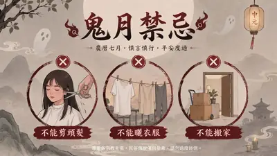
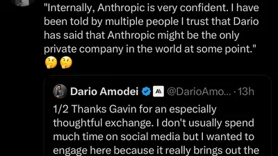
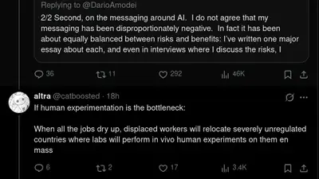

Anna Kornbluh
@annakornbluh.bsky.social
· 08/16 17:42· 命中「OpenAI」
not a conspiracy and other researchers are documenting and developing www.theamericanvandal.com/p/against-te...

時事2026.08.16 娛樂2026.08.15
娛樂2026.08.15
 時事2026.08.13
時事2026.08.13
 3C2026.08.13
3C2026.08.13
Social Lab（OpView 社群口碑資料庫）每週彙整各平台熱門事件。榜上的數據以圖表呈現， 這裡列出每週彙整的標題與觀測期間，點進去看完整排行。
 Facebook
Facebook
 Dcard
Dcard
 Instagram
Instagram
 Mobile01
Mobile01
 YouTube
YouTube
 新聞
新聞
 Facebook 意見領袖
Facebook 意見領袖
 Instagram 意見領袖
Instagram 意見領袖
 YouTube 意見領袖
YouTube 意見領袖
Social Lab 依社群聲量統計的各平台人氣意見領袖前三名。
Bluesky 的全站熱門話題，以英語圈的娛樂、體育、政治為主，僅供參考。
以 30 小時內、依讚數與轉發數排序，已過濾掉 AI 繪圖標籤與明顯洗版內容。
not a conspiracy and other researchers are documenting and developing www.theamericanvandal.com/p/against-te...
The first anti-AI protester to be jailed has a message for OpenAI, Anthropic and Meta: ‘Regain your humanity’
“When we say “AI models went rogue,” we skip the entire story: the part where OpenAI manually removed the model's cybersecurity blocks. We skip that OpenAI chose to test it on a machine with a live network connection.” @doctorow.pluralistic.net
This is so f**king amazing. I’ve waited 3y to be able to do this. Starting in iOS27 @skeetsapp.com will start generating Auto ALT text using the free on-device models. No data sent to OpenAI or anyone else.
Drama: Dario said in an internal venue that he thinks it’s possible that there come a time when Anthropic is the only private company in the world. Just Anthropic and governments Dario wrote a HUGE tweet thread last night addressing communication, and… yeah, he said it

Seybold: “What companies like OpenAI are looking for from schools is not only a reliable stream of subscription fees to bolster ongoing cash flow problems, but also repositories of aggregatable and monetizable data.”
sorry, what exactly are former OpenAI guys thinking

"The thing that will work is actually curing cancer,"
The Guardian has a partnership with OpenAI
Die EU will Kennzeichnung von KI-Inhalten, Anthropic befolgt die Forderung mit Verspätung. Ohne Prüfmöglichkeit und weltweit. WTF? #Künstliche Intelligenz
Anthropic shares more details about how Claude’s new watermarks will work